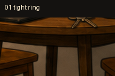
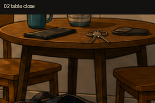
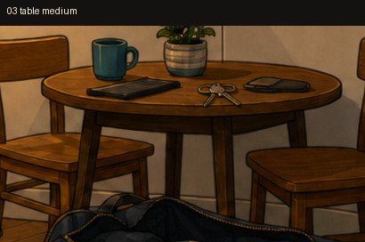
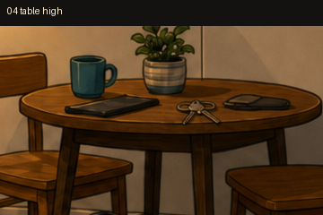
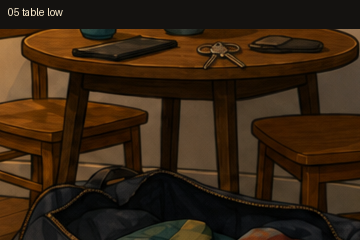

Pick a keys close-up frame
Same room art — reply in chat with 01, 02, 03, 04, or 05.

01 — Tight ring (smallest)
02 — Table close (keys centered)
03 — Table medium (widest)
04 — Table high (shifted up)
05 — Table low (shifted down)